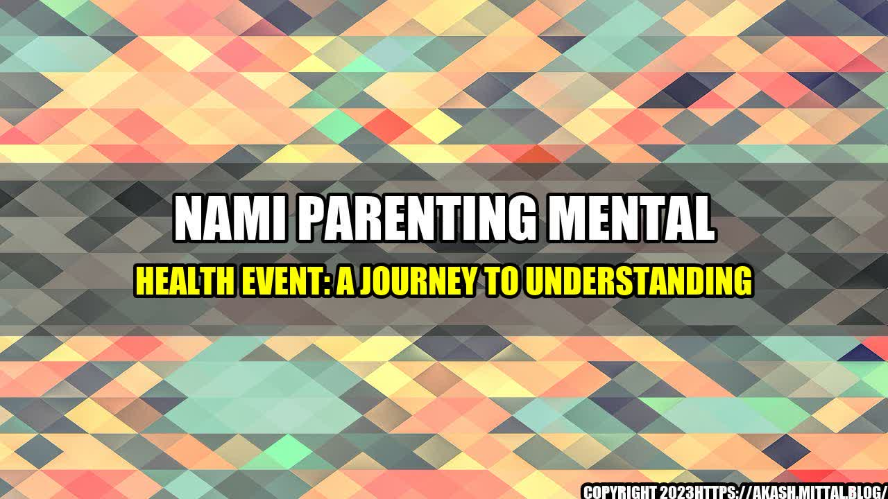

Navigating Parenthood: A Journey to Understanding Mental Health

An interesting Story
Mary had always dreamed of having a family, but when her son was born, she felt overwhelmed with anxiety and guilt. She tried to hide her feelings but felt she was failing as a mother. She reached out to NAMI (National Alliance on Mental Illness) for support and found a community of parents who had experienced similar challenges. They helped Mary understand that mental health challenges are common, and seeking help is a sign of strength. Mary now feels more confident and equipped to support her son's mental health needs.
According to the National Institute of Mental Health, 1 in 5 children experience a mental health disorder, and 50% of all lifetime mental illnesses begin by age 14. Despite these statistics, many parents struggle to identify and address their children's mental health needs. Only 20% of children with mental health disorders receive the proper treatment and support they need. NAMI's Parenting Mental Health Event aims to change this by providing parents with resources and strategies to support their children's mental wellness. In 2020, NAMI hosted events in 42 states, reaching over 11,000 parents and caregivers.
An Eye-catching Title
Navigating Parenthood: A Journey to Understanding Mental Health
and Case Studies
Daniel's parents noticed he was experiencing symptoms of anxiety and depression. They were hesitant to seek help, thinking it was just a phase. As Daniel's behavior worsened, they reached out to NAMI for support. Through NAMI's programs, they learned strategies to talk to their son about his mental health, and how to advocate for his needs within the school system. Daniel is now receiving the support he needs, and his parents feel more connected and confident in their ability to support his mental health.
1. Mental health challenges are common in children, and seeking support is a sign of strength. 2. Parents and caregivers can play a critical role in supporting their children's mental wellness by learning about mental health and seeking appropriate resources and support. 3. NAMI's Parenting Mental Health Event provides parents with the tools and strategies they need to navigate their children's mental health needs.
Practical Tips
- Familiarize yourself with the signs and symptoms of mental health challenges in children. - Talk to your child about mental health and encourage open, honest communication. - Advocate for your child's mental health needs within the school system.
Reference URLs and Hashtags
https://www.nami.org/ - NAMI official website https://www.nimh.nih.gov/ - National Institute of Mental Health official website #namiparentingevent #mentalhealth #parenting #mentalwellness #mentalhealthawareness Category: Mental Health, Parenting.
Curated by Team Akash.Mittal.Blog
Share on Twitter Share on LinkedIn